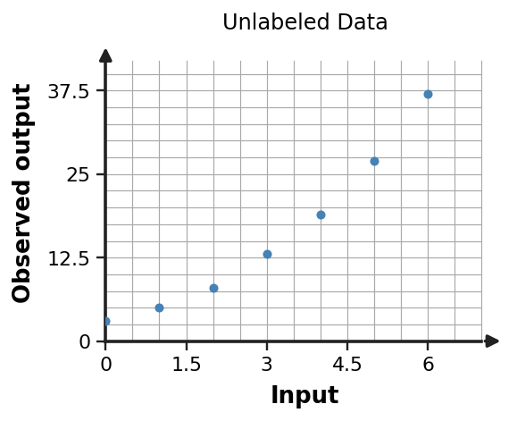

Algebra 1 · Unit 8 · Section 8.4 · Investigation
Mini Modeling Investigation
Modeling Investigation
Learning Target: Students will create and analyze mathematical models using real-world data.
Directions
- Work with a partner unless your teacher assigns a different grouping.
- Show the evidence you use, not only the final answer.
- When a representation changes, keep the meaning of the quantities attached to your work.
- Revise an answer if later evidence shows that your first claim was incomplete.
Part 1 · Inspect the Data
The plotted data come with no model label. Describe the association and calculate evidence that might distinguish linear from quadratic behavior.

Part 2 · Choose and Build a Model
Choose a linear, quadratic, exponential, or absolute-value model family. Use at least two forms of evidence from the data/context to defend the choice, then write a reasonable model.
Part 3 · Stress-Test the Model
Use your model to predict one value inside the observed range and one value just outside it. Which prediction should you trust more, and why?
Part 4 · Revision
Describe one new data point that would make you reconsider your model family. Explain why.